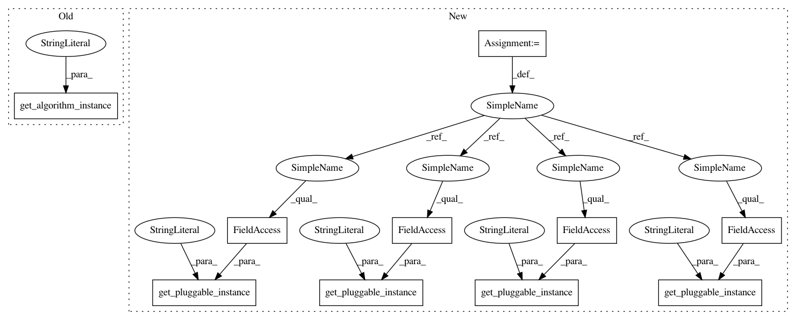

831be1dc40528bf85d45995a9ba0acaf25c0c1aa,test/test_vqe2iqpe.py,TestVQE2IQPE,test_vqe_2_iqpe,#TestVQE2IQPE#,45
Before Change
state_in = VarFormBased()
state_in.init_args(var_form, result["opt_params"])
iqpe = get_algorithm_instance("IQPE")
iqpe.setup_quantum_backend(backend="qasm_simulator", shots=100, skip_transpiler=True)
iqpe.init_args(
self.algo_input.qubit_op, state_in, num_time_slices, num_iterations,
paulis_grouping="random",
After Change
def test_vqe_2_iqpe(self):
num_qbits = self.algo_input.qubit_op.num_qubits
var_form = get_pluggable_instance(PluggableType.VARIATIONAL_FORM,"RYRZ")
var_form.init_args(num_qbits, 3)
optimizer = get_pluggable_instance(PluggableType.OPTIMIZER,"SPSA")
optimizer.init_args(max_trials=10)
// optimizer.set_options(**{"max_trials": 500})
algo = get_pluggable_instance(PluggableType.ALGORITHM,"VQE")
algo.setup_quantum_backend(backend="qasm_simulator")
algo.init_args(self.algo_input.qubit_op, "paulis", var_form, optimizer)
result = algo.run()
self.log.debug("VQE result: {}.".format(result))
self.ref_eigenval = -1.85727503
num_time_slices = 50
num_iterations = 11
state_in = VarFormBased()
state_in.init_args(var_form, result["opt_params"])
iqpe = get_pluggable_instance(PluggableType.ALGORITHM,"IQPE")
iqpe.setup_quantum_backend(backend="qasm_simulator", shots=100, skip_transpiler=True)
iqpe.init_args(
self.algo_input.qubit_op, state_in, num_time_slices, num_iterations,
paulis_grouping="random",
In pattern: SUPERPATTERN
Frequency: 3
Non-data size: 10
Instances
Project Name: Qiskit/qiskit-aqua
Commit Name: 831be1dc40528bf85d45995a9ba0acaf25c0c1aa
Time: 2018-11-19
Author: manoel@us.ibm.com
File Name: test/test_vqe2iqpe.py
Class Name: TestVQE2IQPE
Method Name: test_vqe_2_iqpe
Project Name: Qiskit/qiskit-aqua
Commit Name: 831be1dc40528bf85d45995a9ba0acaf25c0c1aa
Time: 2018-11-19
Author: manoel@us.ibm.com
File Name: test/test_vqe2iqpe.py
Class Name: TestVQE2IQPE
Method Name: test_vqe_2_iqpe
Project Name: Qiskit/qiskit-aqua
Commit Name: 831be1dc40528bf85d45995a9ba0acaf25c0c1aa
Time: 2018-11-19
Author: manoel@us.ibm.com
File Name: test/test_qsvm_variational.py
Class Name: TestQSVMVariational
Method Name: test_qsvm_variational_directly
Project Name: Qiskit/qiskit-aqua
Commit Name: 831be1dc40528bf85d45995a9ba0acaf25c0c1aa
Time: 2018-11-19
Author: manoel@us.ibm.com
File Name: test/test_vqe.py
Class Name: TestVQE
Method Name: test_vqe_direct